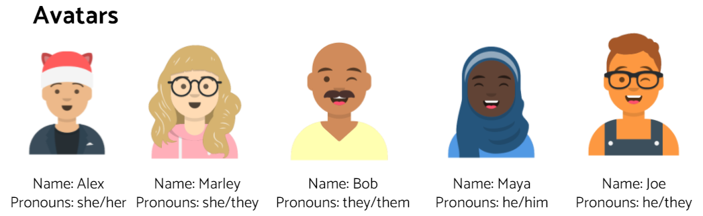

Helena Maudoux / July 21, 2021
The video below is a tutorial on how to create bold and italic elements in HTML. This video is really helpful, as it provides simple instructions that afre easy to understand. It enables the watcher to succesfully learning how to make their text bold or italicized.
I think the world today and myself have been impacted by cryptography as if Elizabeth Friedman had not cracked the Nazis code, we would perhaps not be the same country or world we are today. Cryptography has both positive and negative aspects. On one hand you are able to use it to send encrypted messages to certain people. It keeps confidentiality, authenticity, and data integrity. Elizabeth Friedman decrypted a Nazi message which helped the FBI in the long run. An example of using cryptology in the world is cash withdrawal from an ATM.
I have encountered Machine Learning in the past when an ad pops up which suggests something I enjoy. I enjoy jewelry, so I often see jewelry ads on various websites. Another example of Machine learning is various apps like Youtube, Spotify, and others. They base the recommendations on what you have previously watched or listened to. I think these recommendations are fair as they provide me with similar content to my liking. However, it can also be unfair as I may not be able to discover new things, as it will only recommend the things it knows I like.
I think the unfairness can be addressed by programming the machine learning algorithm to not only take in what people like and give them similar things to it but also give them a variety so they are able to experience other things. An example of this could be offering more variety of Youtube videos while still keeping those that the person enjoys.
In class, my group and I were unsure of what to pick as an issue so we chose to put whether or not the person in the webcam had a stuffed Otto, in order to tell whether they have gone to Syracuse or attended one of their programs.
My team and I were asked to create a game that would help teachers and other adults to be better at gender identity. We were provided an inspo game which was Among Us, which we used as a reference. We named our company Otto Gaming and named our game Genders Among Us (Identity Expedition). Our main goal for the game was to help teachers memorize the different pronouns and terms to a certain person. We also hoped to increase adults' knowledge on gender identity.
In the game we added a few features to help make it similar to Among Us. We added multiplayer, we had randomly assigned avatars, names, and pronouns, a classroom-themed setting, and some memory-based minigames (tasks). We wanted the avatars to acclimatize teachers to different combinations of appearances/names/pronouns.
The map in which the game takes place is in a school, where one room can be the Math classroom, the dining hall, computer lab etc. The purpose of this is to make the game resonate with the students and teachers by giving them a familiar environment. For the minigames we would have one where the person would need to match the person's appearance to their name/pronoun. Another one would be where the player receives a gender identity term in one area of the map and then proceeds to go to another part of the map to identify the pronouns, in order to complete the task. Together we came up with an amazing game idea which would benefit the teachers and helped us to get more familiar with game creation.